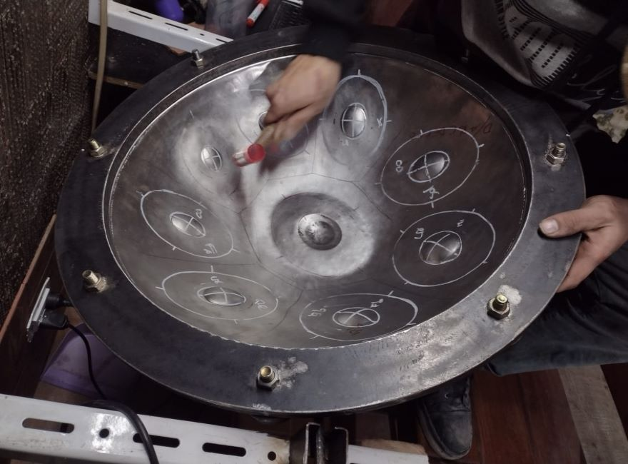
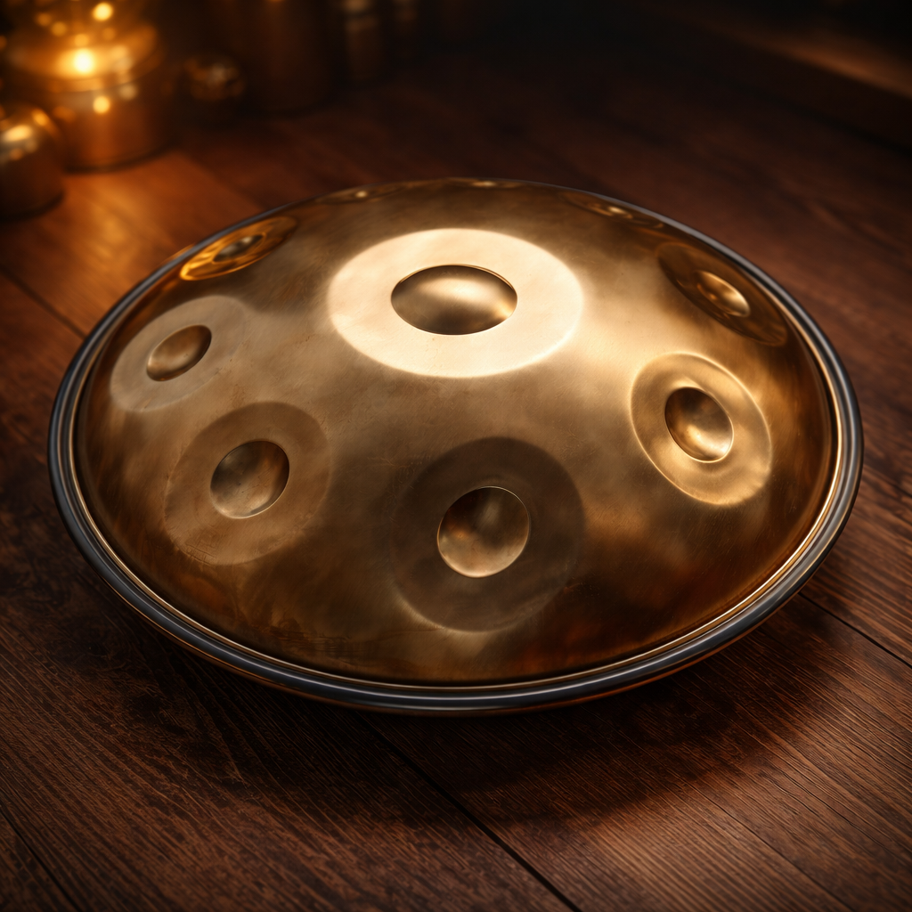
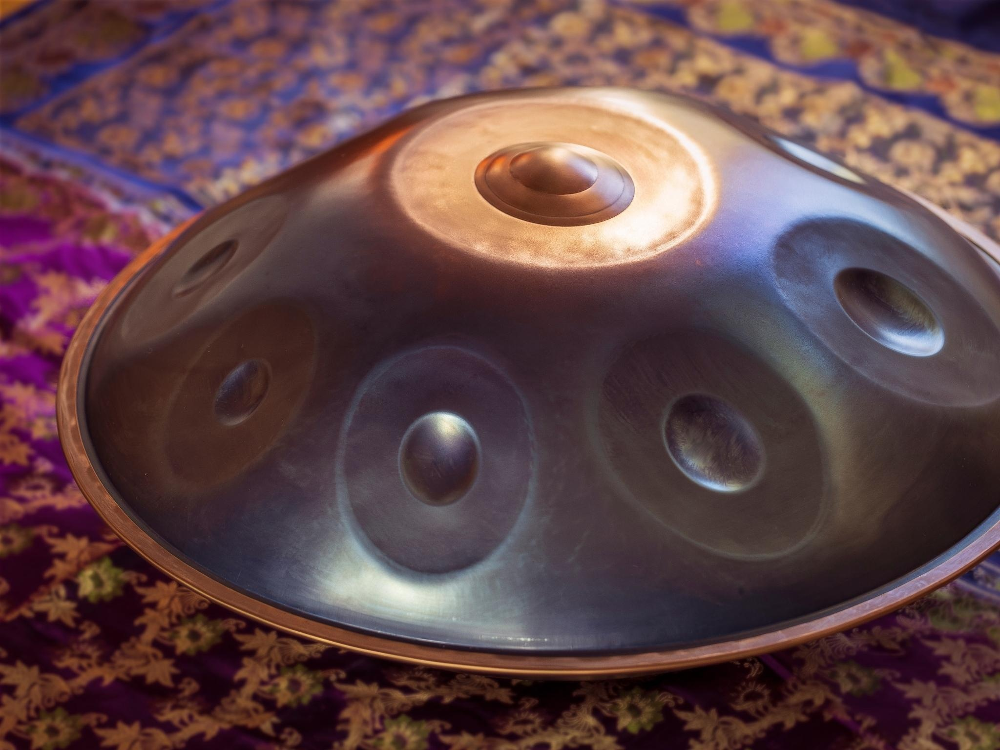

Cada instrumento es forjado en acero inoxidable y afinado nota por nota a mano.


Escalas pensadas para que sea fácil tocar tu primer handpan y también para músicos que buscan un handpan profesional.



Afinaciones personalizadas, elección de escala. Ideal para músicos que ya tienen experiencia o buscan un handpan artesanal
El handpan es un instrumento de percusión melódica creado a comienzos de los 2000, inspirado en el steelpan caribeño y en instrumentos tradicionales de India y Medio Oriente. Se toca con las manos y combina ritmo, melodía y armonía en un solo instrumento.
Su sonido suele describirse como envolvente, meditativo y muy expresivo, por eso se usa tanto en música relajante, sesiones de yoga, sound healing, meditación y presentaciones en vivo.
Podés comprar un handpan artesanal en Argentina directamente con nosotros. Diseñamos y construimos cada instrumento en nuestro taller, y coordinamos la entrega o envío a tu ciudad.
El precio del handpan depende de la escala, cantidad de notas y terminación. Escribinos por WhatsApp para ver precios actuales de handpan y opciones de pago con Mercado Pago o transferencia bancaria.
Contanos qué tipo de handpan artesanal estás buscando, para qué lo querés usar (meditación, shows, estudio, etc.) y te asesoramos con modelos, escalas y tiempos de entrega.
Una vez elegido el modelo y afinación, te enviamos el link para abonar desde tu celu o PC.
Te enviamos el link por WhatsApp. Si querés, te explicamos cuotas y tiempos de entrega.
Pedir link por WhatsAppIdeal para pagos completos o señas. Una vez acreditado el pago, se agenda tu handpan para fabricación o entrega.

Los detalles de seña, tiempos de fabricación y entrega de tu handpan se conversan por WhatsApp, para que el proceso sea claro y cómodo.